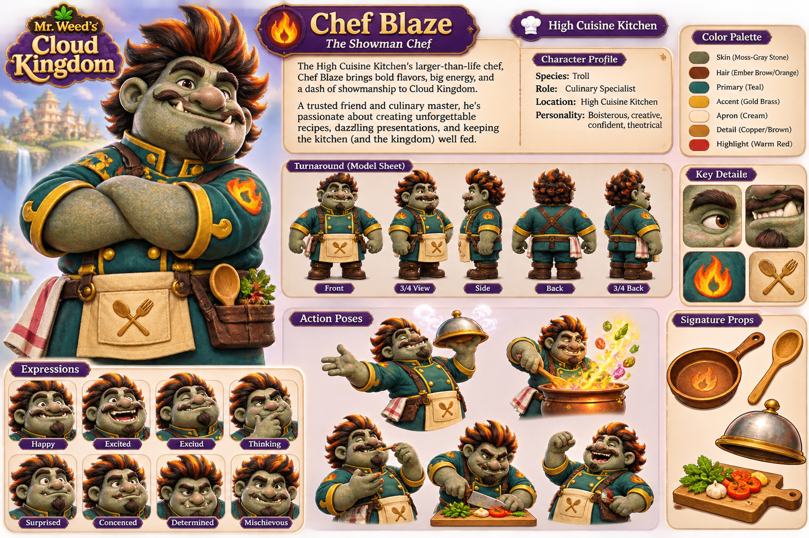
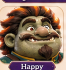
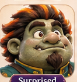
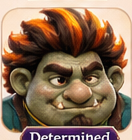
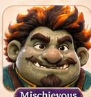
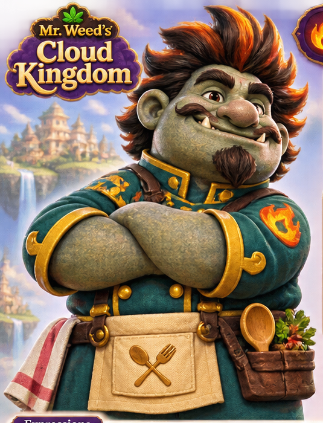
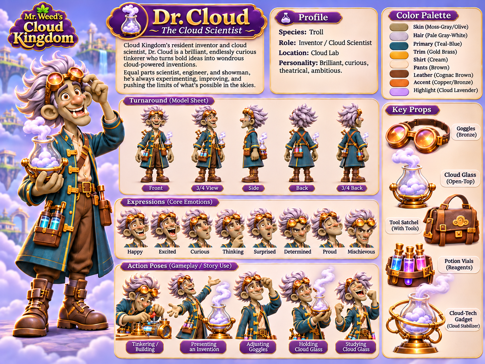
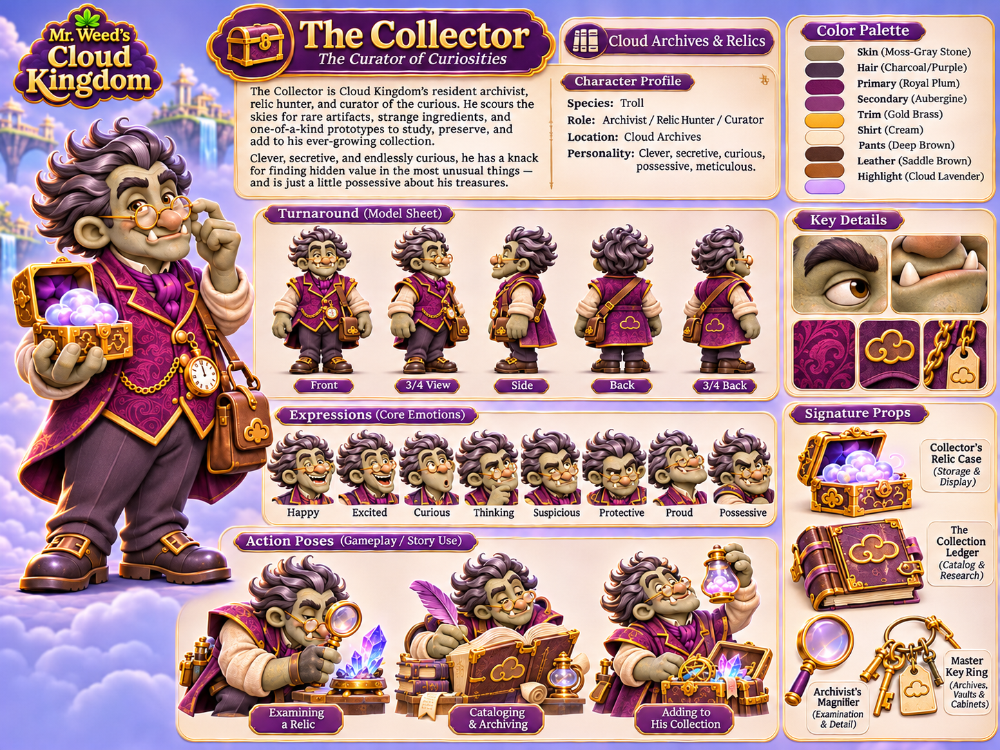
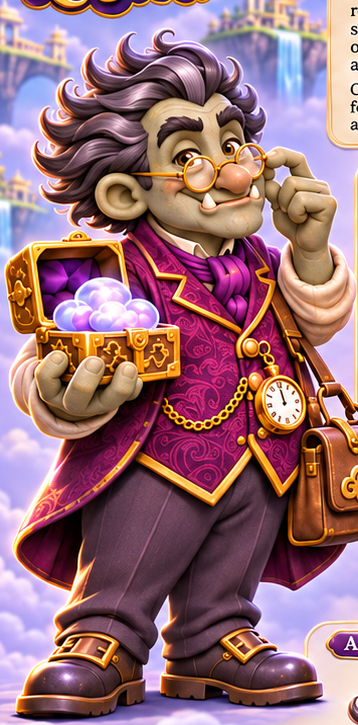

These 30 rectangular crops are superseded historical references shown beside unchanged canonical sheets. They are not the approved standalone exports and must never be imported. Open latest-main approved export manifest · Open owner lock and exact ZIP hash · Open per-file historical crop audit.
| Character | Design direction | Standalone export approval | Runtime readiness | Device QA | Notes |
|---|---|---|---|---|---|
| Riff | Approved/locked reference | APPROVED_LOCKED_2026-11-09 (11 exports) | Integrated into Flutter; story interaction fixture verification recorded in Issue #26 evidence | PASS — S24 in-memory fixture at Levels 15/16; Riff playful portrait/dialogue and close navigation | Exact locked manifest and approval record are bundled under ../. S24 preview confirmed hero, icons, eight expressions and framed story portrait. |
| Mona Chromatic | Approved/locked reference | APPROVED_LOCKED_2026-11-09 (11 exports) | Integrated into Flutter; story interaction fixture verification recorded in Issue #26 evidence | PASS — S24 in-memory fixture at Levels 25/26; Mona thinking portrait/dialogue and close navigation | Gold frame retains the approved source background. S24 preview confirmed hero, icons, eight expressions and uncropped framed story portrait. |
| Chef Blaze | Approved/locked reference | APPROVED_LOCKED_2026-11-11 (8 standalone exports; exact hashes on latest main) | NOT IMPORTED — approved ZIP binary not received | NOT TESTED | Authoritative 24-export owner lock is in docs/BATCH_G_THREE_TROLLS_STANDALONE_LOCK_2026-11-11.md. Waiting for exact approved archive; older crop proposals are not runtime assets. |
| Dr. Cloud | Approved/locked reference | APPROVED_LOCKED_2026-11-11 (8 standalone exports; exact hashes on latest main) | NOT IMPORTED — approved ZIP binary not received | NOT TESTED | Authoritative 24-export owner lock is in docs/BATCH_G_THREE_TROLLS_STANDALONE_LOCK_2026-11-11.md. Waiting for exact approved archive; older crop proposals are not runtime assets. |
| The Collector | Approved/locked reference | APPROVED_LOCKED_2026-11-11 (8 standalone exports; exact hashes on latest main) | NOT IMPORTED — approved ZIP binary not received | NOT TESTED | Authoritative 24-export owner lock is in docs/BATCH_G_THREE_TROLLS_STANDALONE_LOCK_2026-11-11.md. Waiting for exact approved archive; older crop proposals are not runtime assets. |


06aff9e54bf041386383d242c0b379690bf1fbd701d9afbe7cb6370300267350d04c30b8846d9ac19b58904fef35288bb784baf8c4ae0df74d80264f4940b56886e4a7e7b56c9bba2067aa0fe88e28cd4a812495bc6eef0b0e92eb0d7751203107ed8dd969a45ab83db92a3ee808914799ec3cfe918ab7edd4f1ee41df54889a
0c1780f124690a1d0716a0bb2b8e1aa98757f8bbdfdc6d7bd87e2c3dc71dc027a74ea240cf78c4a201fd6acc61791f0f449c302824b8cbf044c71ac4ba553ab1
dcc319ad142b62173303299a0c8e3314d38bd6aecc6063286c28e1913f89eb69
29f9fc2725b8b10737ed3eda8817d3f6c47e15278589586617d27ed1aa808f67
30d7d1ddc7264a3ab7b5e8034689160b9b88dc7388c4edcd8560acfae1cfe75276a9e376054fe5acea0188b57b480e9ac72de4e2a6df0bbbb802f1ad4ed29383
13e42e6a5d31cab790cb0c9f3c989160892ad96b49f69b2c025db26d348013779e9847548a83e82a78d23dd31bd46dc8613681c3389a9e17ba488563a909c976cd70c6eb137bca58c4acf94accf4f967117027c2d8da1f2c86889518067284d7333b2a8fcce6f2e65d7920141352ce584cb7b3c68bcccf93bcacb30b4a100834190fe930fecd4beddf6b9b544921b172b8ec10da16b502bc53b24f05a0df518b794bf1975d28c6e2fb5ba90e021cf509d83bb944d6ea7cee2523317db2f2f050093a2379b3173bff03a101513c8ef0d9cb760bc530dda2d9f95ca55c1931391bee43a364c480d38005b12cacd9153c8eb8d235821308c68f94f1dada9c9d22550098f058a50ddb1685dbb72bad586c9ae78cf71b2d20d24d18cd6ad7c74f314d964dd7e81d80f7e35dddadfdc2662d34707cbd393c3cff3b21567ded06d26d3b
84ba4da7e9aa9f90d6af4838ea83f82de21f5776c4b03b98568565202902d0364d0682915466cce0e9df5bed5723498e28acdd8c0466a78390991d2388b9e5f791516a3a43fdad6b8b2cc5dd2584c42a1178090d3b4a375e89a65e19900d173fe264b64b4954e7c478868e4d03e54a0f8aecb83d2bfa9c3f96191ad740fc5a81bf60d0007bd343a1c9ca72c31de3cf4cc3bc223dc3ef0991433a676dbf7856259f5299b53e90313b3490b61078a7416edb5ad46c757b58b3ff37036b8ec895e78f23f0c158e27e1ce6785faca77e7f5eb83175f6e45fa37edf213200441698e3694175cf7cfd76dcc354c5a9fed8fce4e48121ed32d04563cc1137bbac1ddd61
c0f805a86ea7200b6bea345822d66826df5cb58706f916c6b324bf020908ab5bf6048d7bf49de79f87bbfc7ec08a2eac867b6a5a558d0a150ddb33764d0f077e